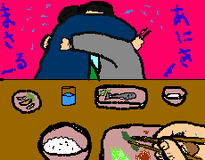

これは、怖い。昼飯でいった定食屋さん。あなたは満席のため、相席になりました。そこの目の前で、生き別れになった兄弟があなたの目の前で再会をする。あなたはあっけにとられるだろうが、目の前の食事をたいらげなければならない。しかし、目の前で抱き合う兄弟。拍手をするのも変だし、「おめでとう」と声をかけるのもおかしい。そう。すべてがおかしいのである。定食を食べるという日常と目の前で起こる兄弟の再会という非日常的状況。笑いたくても、笑えない。あなたは抱き合う兄弟の手に はしがあっても、笑えません。しかし、感動とは少し遠い感じがします。そう。